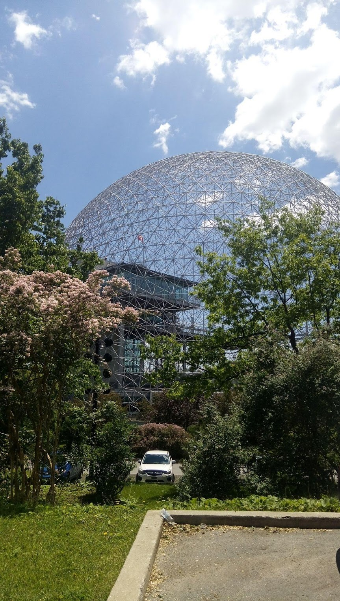
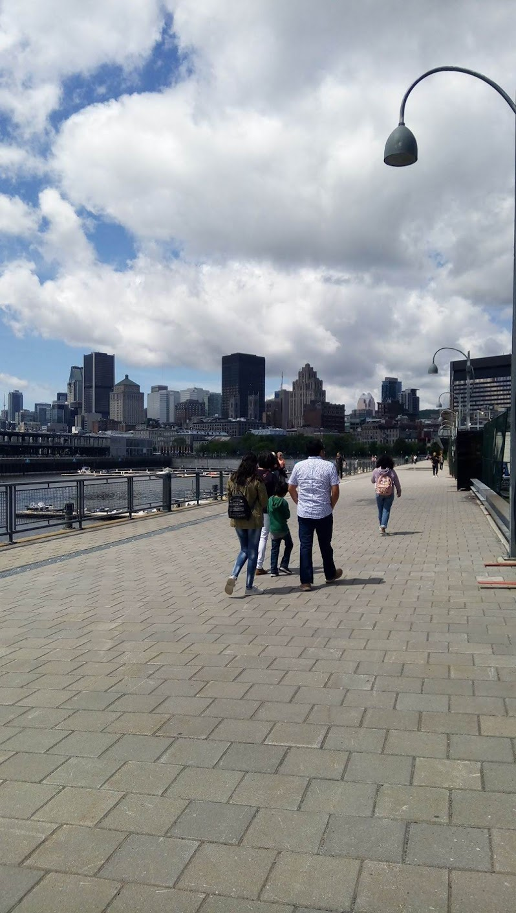
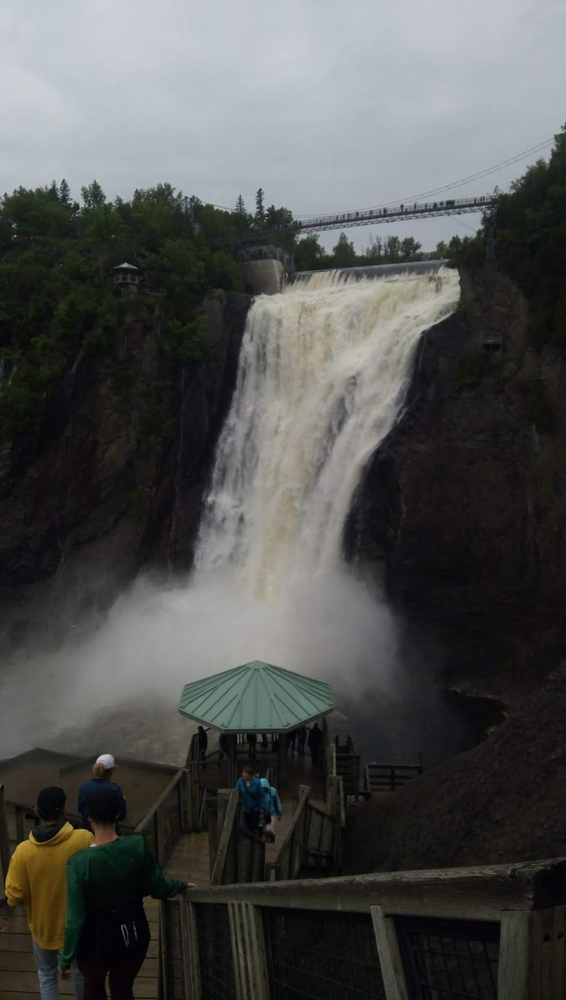
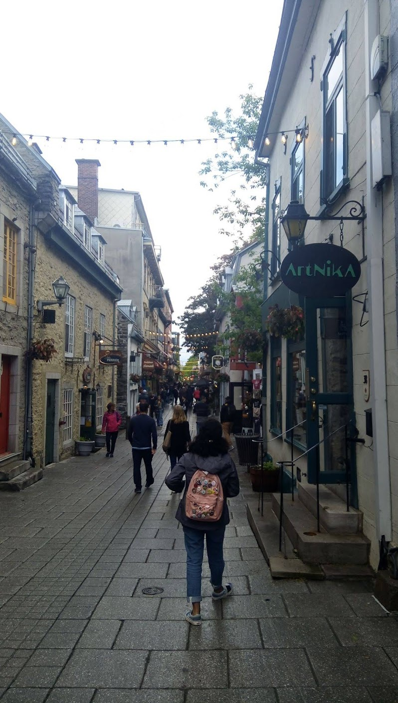
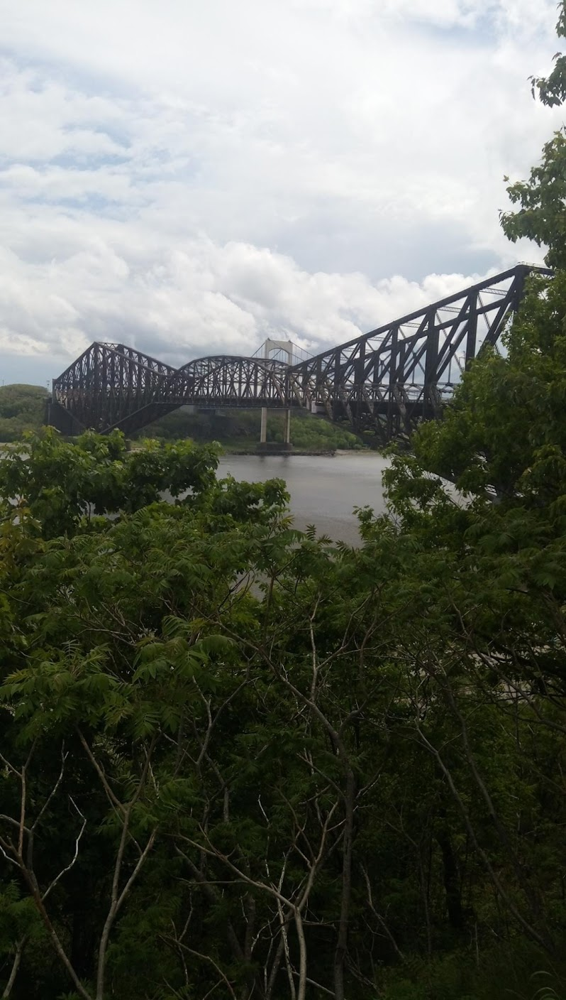

I was originally born in Mexico, so I have luckily been able to visit many times. My family lives in Guanajuato so we normally go around that area. My favorite area is Queretaro, I was born there and for a short time grew up there. I have been to Cancun once because it was a special occasion, but I hope to get to go again.The following are pictures from some of my trips.


I have been to Canada two or three times. I visited Quebec and Montreal, they were both really nice and it was very peaceful. They had better food than I thought, so the bakeries were nice surprises. People really keep to themselves there. We did lots of walking, the scenery was beautiful so I didn't mind. I would like to visit Vancouver next.
    